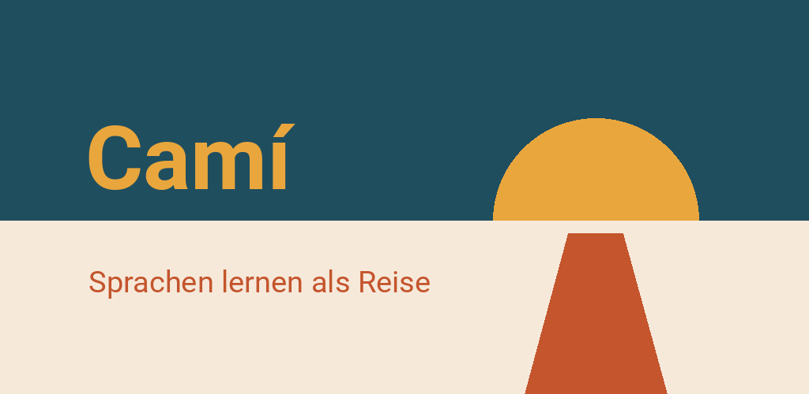

Camí – Sprachen lernen
Isländisch, Katalanisch, Kroatisch, Baskisch, Dänisch u. a. lernen — ohne Konto
Für Android ab Version 8


Camí ist eine Sprachlern-App, die wie eine Reise aufgebaut ist. Jede Etappe ist ein echter Ort: Barcelona, das Ebro-Delta, die Serra de Tramuntana. Wer eine Etappe abschließt, bekommt eine kleine Belohnung — ein Sprichwort, ein Rezept, eine Szene am Ort oder eine Postkarte, die als Hintergrund der App bleibt.
Vierzehn sprachen, vierzehn reisen
- Katalanisch: Katalonien, Mallorca, País Valencià
- Französisch: Frankreich, Westschweiz, Wallonie
- Deutsch: Norddeutschland, Alpen, Österreich, Schweiz
- Englisch: Großbritannien, Irland, Malta, Zypern
- Spanisch: Andalusien, Kastilien, Mexiko
- Polnisch: Kleinpolen, Karpatenvorland, Masowien, Ostsee
- Dänisch: Kopenhagen, die Inseln, Jütland
- Griechisch: Athen, Peloponnes, Kreta, Kykladen
- Kroatisch: Istrien, Dalmatien, Zagreb
- Italienisch: Toskana, Umbrien, Latium
- Isländisch: einmal um die Insel
- Baskisch: Bizkaia und Gipuzkoa
- Koreanisch: Seoul, die Hauptstadtregion und Gangwon
- Slowenisch: Ljubljana und die Gorenjska
Sechs Kurse beginnen mit 55 Etappen: A1 und A2 ganz, dazu die ersten Etappen von B1 und B2. Englisch ist ganz frei, 94 Etappen bis B2. Isländisch, Griechisch und Kroatisch beginnen mit 37 Etappen, Italienisch mit 52, Koreanisch mit 49, Baskisch mit 31 und Slowenisch mit 28 — die letzten vier wachsen weiter. Erklärt wird auf Deutsch, Englisch, Französisch, Katalanisch, Spanisch oder Polnisch: Du kannst Katalanisch auf Deutsch lernen — oder Deutsch auf Katalanisch, Englisch auf Französisch, und so weiter. Ein Wechsel der Erklärsprache kostet keinen Fortschritt.
Was dabei ist
- Neun Übungsarten: Auswahl, Lücken, Paare, Satzbau, Hören, Einsortieren, Umformen, Lesen, Gespräche — ab A2 werden Lücken und Diktate geschrieben statt angetippt
- Am Ende jeder Etappe eine Hörgeschichte: Leute vom Ort im Gespräch, Zeile für Zeile vorgelesen, mit Fragen dazwischen
- Ausspracheübungen: Camí hört zu und zeigt, wie viel übereinstimmt (Katalanisch, Englisch, Deutsch, Italienisch)
- Ein Grammatik-Rückgrat: Jede Form hat ihre Etappe, mit Regel, Beispielen und Nachschlagewerk
- Karteikarten mit wachsenden Abständen, die aus deinen erledigten Lektionen entstehen
- Eine gezeichnete Karte deiner Reise, mit Landeskunde zu jeder Region
- Ein Einstufungstest, wenn du nicht bei null anfängst
- Tagesziel, Wochenziel und eine Serie — ohne Zeitdruck und ohne verlorene Leben
- Eine freiwillige Rangliste mit Spitznamen, ohne Konto
Ohne konto, offline
Camí braucht keine Anmeldung. Kurse und Karten sind eingebaut; Fotos, Stimmen und das Sprachpaket für die Aussprache bringt Google Play mit dem Kurs. Dein Lernstand bleibt auf deinem Gerät. Keine Werbung, kein Tracking, keine Käufe. Von sich aus geht die App nur ins Netz, wenn du es willst: bei der Rangliste oder wenn du über „Feedback“ einen Fehler schickst.
Vorgelesen wird mit Camís eigenen, natürlichen Stimmen, in jeder Sprache außer Baskisch. In den Einstellungen kannst du stattdessen die Stimme deines Telefons wählen.